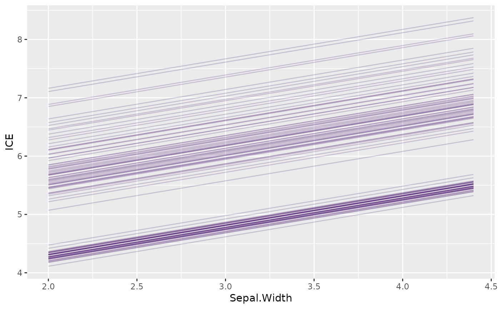
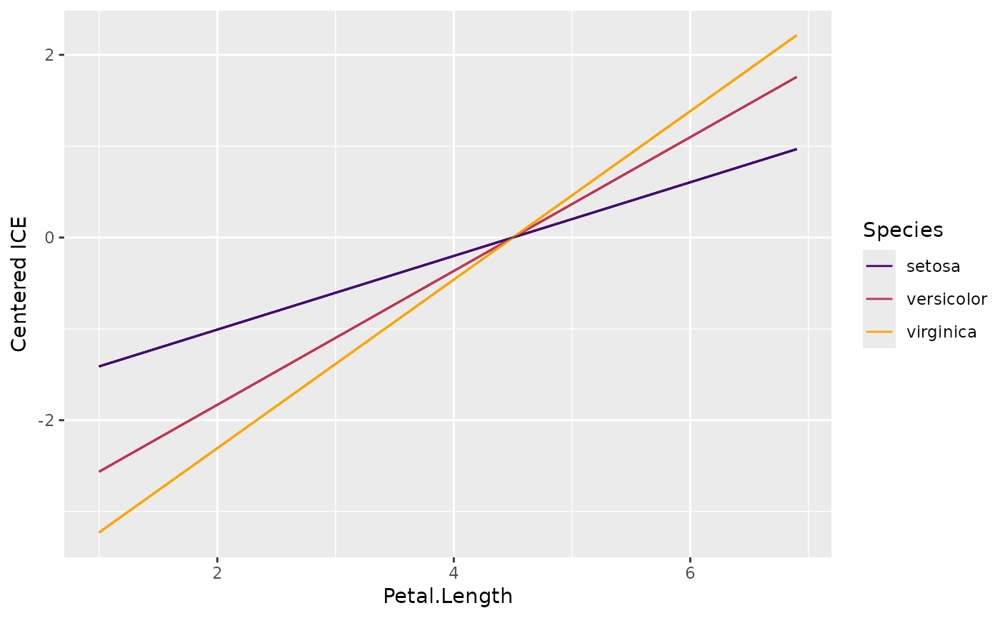
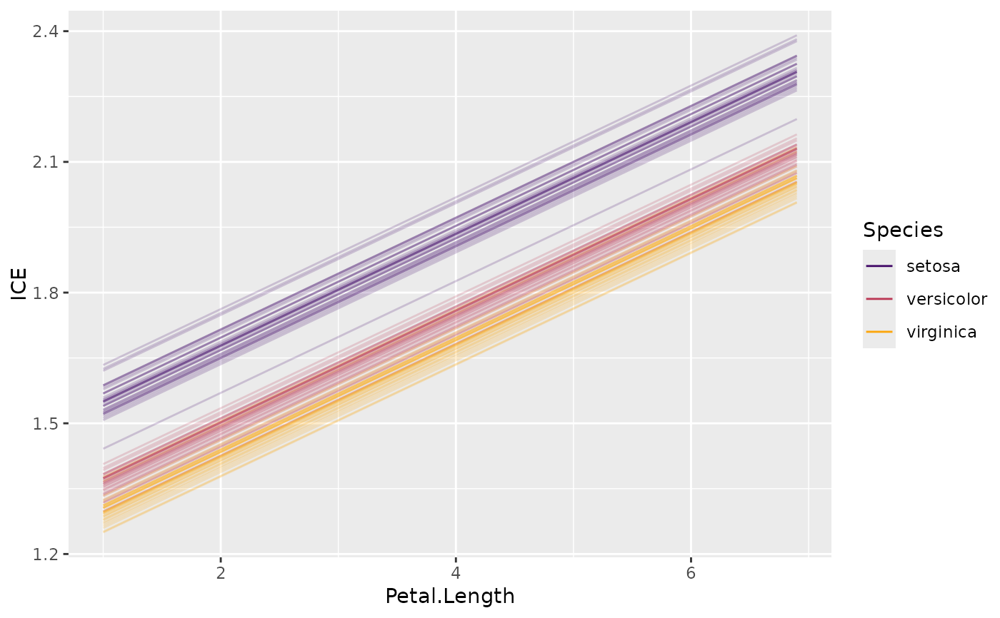
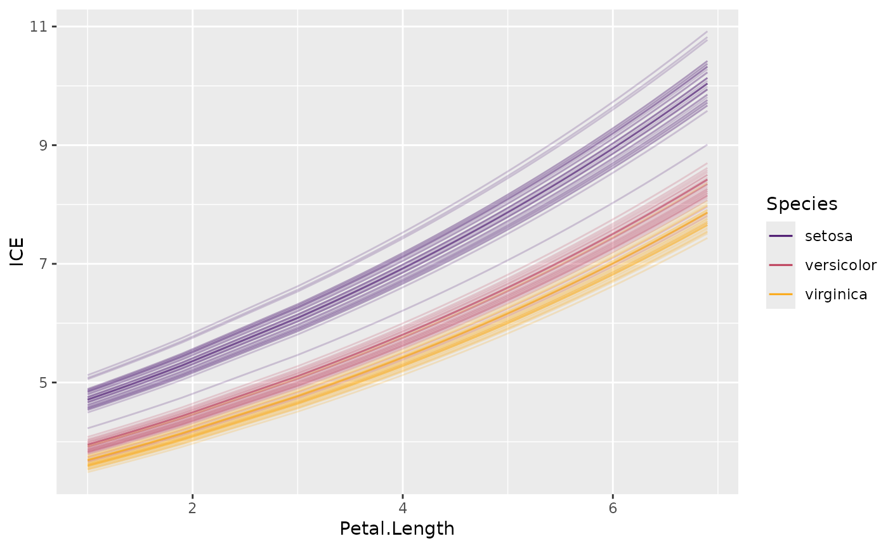

Disaggregated partial dependencies, see reference. The plot method supports
up to two grouping variables via BY.
ice(object, ...)
# S3 method for default
ice(
object,
v,
X,
pred_fun = stats::predict,
BY = NULL,
grid = NULL,
grid_size = 49L,
trim = c(0.01, 0.99),
strategy = c("uniform", "quantile"),
na.rm = TRUE,
n_max = 100L,
...
)
# S3 method for ranger
ice(
object,
v,
X,
pred_fun = function(m, X, ...) stats::predict(m, X, ...)$predictions,
BY = NULL,
grid = NULL,
grid_size = 49L,
trim = c(0.01, 0.99),
strategy = c("uniform", "quantile"),
na.rm = TRUE,
n_max = 100L,
...
)
# S3 method for explainer
ice(
object,
v = v,
X = object[["data"]],
pred_fun = object[["predict_function"]],
BY = NULL,
grid = NULL,
grid_size = 49L,
trim = c(0.01, 0.99),
strategy = c("uniform", "quantile"),
na.rm = TRUE,
n_max = 100L,
...
)Fitted model object.
Additional arguments passed to pred_fun(object, X, ...),
for instance type = "response" in a glm() model, or reshape = TRUE in a
multiclass XGBoost model.
One or more column names over which you want to calculate the ICE.
A data.frame or matrix serving as background dataset.
Prediction function of the form function(object, X, ...),
providing \(K \ge 1\) predictions per row. Its first argument represents the
model object, its second argument a data structure like X. Additional arguments
(such as type = "response" in a GLM, or reshape = TRUE in a multiclass XGBoost
model) can be passed via .... The default, stats::predict(), will work in
most cases.
Optional grouping vector/matrix/data.frame (up to two columns),
or up to two column names. Unlike with partial_dep(), these variables are not
binned. The first variable is visualized on the color scale, while the second
one goes into a facet_wrap(). Thus, make sure that the second variable is
discrete.
Evaluation grid. A vector (if length(v) == 1L), or a matrix/data.frame
otherwise. If NULL, calculated via multivariate_grid().
Controls the approximate grid size. If x has p columns, then each
(non-discrete) column will be reduced to about the p-th root of grid_size values.
The default c(0.01, 0.99) means that values outside the
1% and 99% quantiles of non-discrete numeric columns are removed before calculation
of grid values. Set to 0:1 for no trimming.
How to find grid values of non-discrete numeric columns?
Either "uniform" or "quantile", see description of univariate_grid().
Should missing values be dropped from the grid? Default is TRUE.
If X has more than n_max rows, a random sample of n_max rows is
selected from X. In this case, set a random seed for reproducibility.
An object of class "ice" containing these elements:
data: data.frame containing the ice values.
grid: Vector, matrix or data.frame of grid values.
v: Same as input v.
K: Number of columns of prediction matrix.
pred_names: Column names of prediction matrix.
by_names: Column name(s) of grouping variable(s) (or NULL).
ice(default): Default method.
ice(ranger): Method for "ranger" models.
ice(explainer): Method for DALEX "explainer".
Goldstein, Alex, and Adam Kapelner and Justin Bleich and Emil Pitkin. Peeking inside the black box: Visualizing statistical learning with plots of individual conditional expectation. Journal of Computational and Graphical Statistics, 24, no. 1 (2015): 44-65.
# MODEL 1: Linear regression
fit <- lm(Sepal.Length ~ . + Species * Petal.Length, data = iris)
plot(ice(fit, v = "Sepal.Width", X = iris))

# Stratified by one variable
ic <- ice(fit, v = "Petal.Length", X = iris, BY = "Species")
ic
#> 'ice' object (4300 rows). Extract via $data. Top rows:
#>
#> obs_ Petal.Length y Species
#> 1 1 1 3.604208 versicolor
#> 2 2 1 3.402393 versicolor
#> 3 3 1 2.212747 virginica
plot(ic)
plot(ic, center = TRUE)

if (FALSE) {
# Stratified by two variables (the second one goes into facets)
ic <- ice(fit, v = "Petal.Length", X = iris, BY = c("Petal.Width", "Species"))
plot(ic)
plot(ic, center = TRUE)
# MODEL 2: Multi-response linear regression
fit <- lm(as.matrix(iris[, 1:2]) ~ Petal.Length + Petal.Width * Species, data = iris)
ic <- ice(fit, v = "Petal.Width", X = iris, BY = iris$Species)
plot(ic)
plot(ic, center = TRUE)
plot(ic, swap_dim = TRUE)
}
# MODEL 3: Gamma GLM -> pass options to predict() via ...
fit <- glm(Sepal.Length ~ ., data = iris, family = Gamma(link = log))
plot(ice(fit, v = "Petal.Length", X = iris, BY = "Species"))

plot(ice(fit, v = "Petal.Length", X = iris, type = "response", BY = "Species"))
